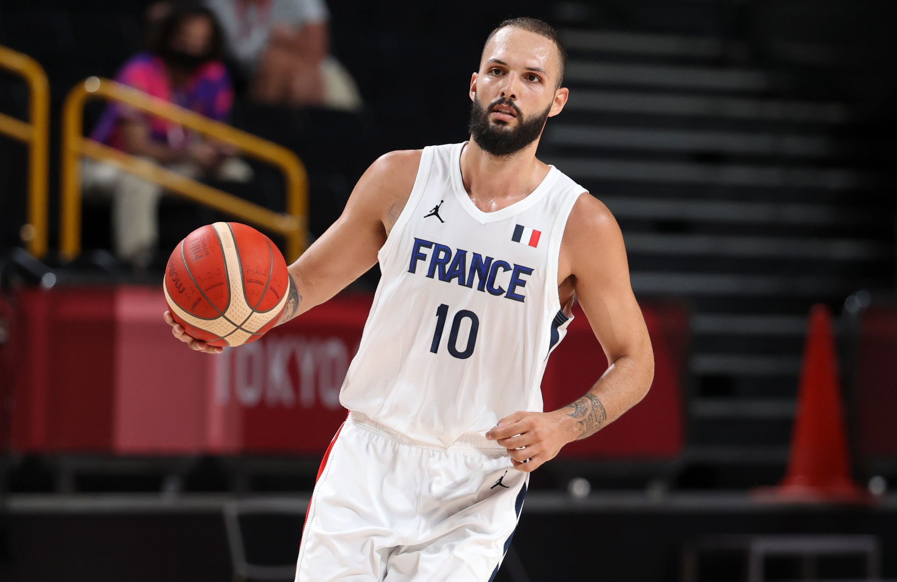
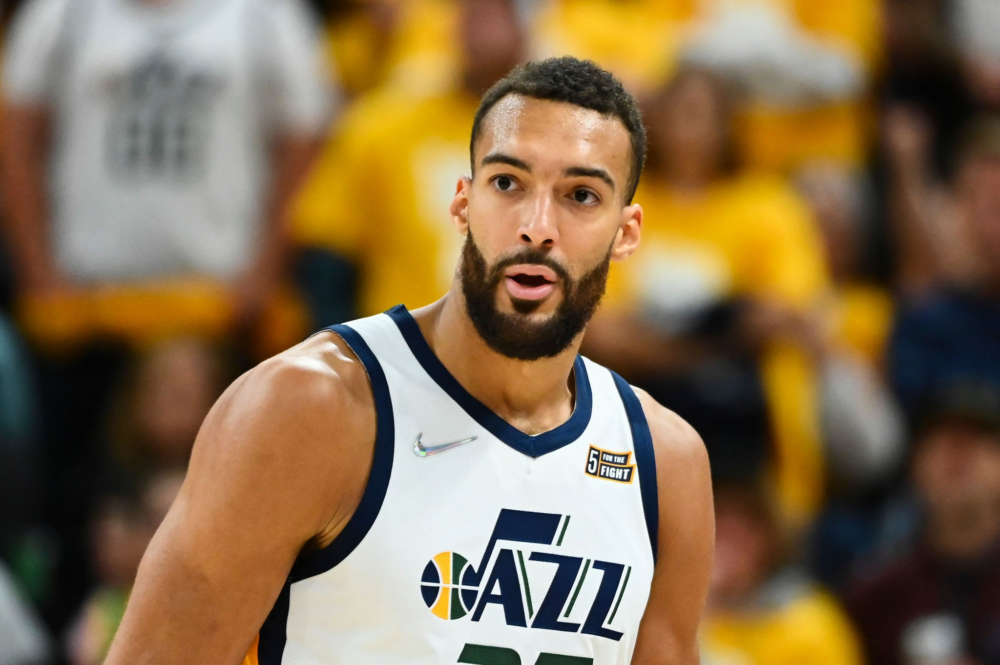

<head>
<style>
    h1 {color:red}
    p {color:white}
    ol {color: blue}
    ul {color:blue}
</style>
</head>


<body style="background: url(./images/cour-napoleon-et-pyramide.png);"></body>
<div>
<h1>French Team Favorites</h1>
<p>These players are <br> some of the fan favorites of their country <br> but they are not as favored in the NBA</p>
<h2><strong>Roster</strong></h2>
<ul>
<a href="https://en.wikipedia.org/wiki/1998_FIBA_World_Championship">
    <li><style></style><strong>1998</strong> Cup Winner</li>
</a>
<a href="https://en.wikipedia.org/wiki/2019_FIBA_Basketball_World_Cup">
    <li><strong>2018</strong> World Cup Winner</li>
</a>
</ul>
</div>
<ol>
<li><a href="https://en.wikipedia.org/wiki/1983%E2%80%9384_FIBA_European_Champions_Cup"><strong>1984 European Champion</strong></a></li>
<li><strong>2000 European Champion</strong></li>
<div class="players">
</ol>
<a href="https://en.wikipedia.org/wiki/Nicolas_Batum">
    
</a>
<a href="https://rarediseases.org/rare-diseases/fournier-gangrene/">
    
</a>
<a href="https://en.wikipedia.org/wiki/Rudy_Gobert">
    
</a>
</div>
<a href="https://www.fiba.basketball/federation/France">
    <br><button type="button">Check Work?</button>
</a>

<audio src="./music/fr.mp3" controls></audio>

<audio id="musicplayer" controls>
    <source src="./music/fr.mp3" />
    <source src="./music/french-jazz-music-142911.mp3">
    <source src="./music/into-the-night-20928.mp3">
    <source src="./music/rescue-21144.mp3">
    <source src="./music/war-is-coming-103662.mp3">
  </audio>
  


